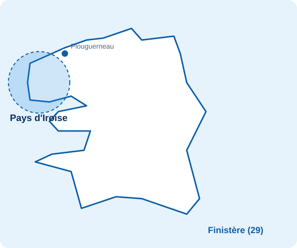

Dépannage de pompe et forage dans le Pays d'Iroise
De Ploudalmézeau au Conquet en passant par Saint-Renan, nous intervenons dans tout le Pays d'Iroise pour le dépannage de pompe, le forage et le traitement de l'eau. Appelez : diagnostic par téléphone, puis intervention sur place.

Nos services dans le Pays d'Iroise
Forage, pompes, traitement de l'eau et pompes à chaleur, pour les particuliers, les professionnels, les agriculteurs et les collectivités.
L'eau dans le Pays d'Iroise : ce qu'il faut savoir
- Habitat dispersé : de nombreuses maisons isolées dépendent d'un puits ou d'un forage, et une panne de pompe prive vite toute la maison d'eau.
- Côte très exposée : vent et embruns usent les équipements extérieurs. Les coffrets et les raccords doivent être contrôlés régulièrement.
- Autonomie en eau : beaucoup de projets de forage pour l'arrosage et la récupération d'eau de pluie.
Dépannage de pompe à Saint-Renan et alentour
Plus d'eau, perte de pression, pompe qui disjoncte ou pompe de relevage en alarme : appelez le 06 47 13 59 52. On fait le diagnostic ensemble au téléphone, puis on intervient sur place.
Communes où nous intervenons dans le Pays d'Iroise
- Ploudalmézeau
- Lampaul-Ploudalmézeau
- Plouguin
- Tréouergat
- Saint-Renan
- Milizac-Guipronvel
- Lanildut
- Porspoder
- Landunvez
- Plouarzel
- Lampaul-Plouarzel
- Lanrivoaré
- Ploumoguer
- Le Conquet
- Plougonvelin
- Locmaria-Plouzané
Votre commune n'est pas dans la liste ? Appelez-nous, nous intervenons dans tout le Finistère.
Vos questions : intervention dans le Pays d'Iroise
Intervenez-vous à Saint-Renan et Ploudalmézeau ?
Oui, Saint-Renan, Ploudalmézeau, Plouguin, Milizac-Guipronvel et les communes voisines font partie de notre zone d'intervention.
Jusqu'où allez-vous dans le Pays d'Iroise ?
Dans tout le Pays d'Iroise, jusqu'au Conquet, Plougonvelin et Locmaria-Plouzané.
Ma maison est isolée et n'a plus d'eau, que faire ?
Coupez l'alimentation de la pompe si le disjoncteur saute, puis appelez-nous. On fait un premier diagnostic par téléphone et on organise l'intervention.